HybridLumenGI / Windows 统一示例 / 线性 HDR 画面对照
颜色反弹与动态响应
Release201 新增固定点光绿转蓝对照。 本页的颜色、残留、门运动和恢复分别来自下列标明的场景与版本。每项结果只适用于各自的实测范围。
普通示例以 960×540 启动。C 切换墙色，L 开关灯，M 启停门运动，F1 隐藏面板。F3 切换两室布局，F4 在室内切换三室路线，O 开关分隔门。F5 只看间接光，再按一次返回。各节标明实际采集版本、机位与适用范围。
1. 静止时的反弹颜色有多准？
当前 Release122 同源 Runtime 在原归档场景第 119 帧的地面与白色接收体上，平均间接亮度分别比既有有限独立参考低 3.075% 和 0.831%。比较量 D 为间接漫反射辐照度除以 π，取自滤波后、乘接收面反射率之前。这是两个固定接收域，不是当前三室全图或普通 Player 的物理真值。
| 接收区域 | 已知点 / 源点 | 平均 D 亮度 | 参考 | 逐点亮度 MAE |
|---|
| 地面 | 13,328 / 13,330 | 0.069485 | 0.071689 | 0.010529 |
| 白色接收体 | 86 / 86 | 0.225072 | 0.226957 | 0.018576 |
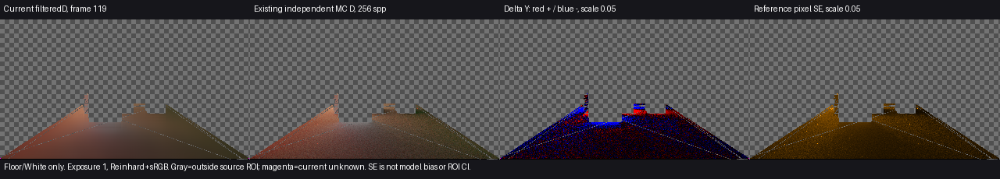
产品源码7c08327，原归档物理资产；640×360／GI320×180、实际DXR、2条射线／4级滤波。差值图红色偏亮、蓝色偏暗，量程0.05；棋盘为区域外，洋红为未知。地板2个unknown单列。
两域的归一化平均RGB色向L1为 0.007976／0.033415，逐点亮度MAE与参考均值之比为 14.69%／8.18%，名义满足当前工程目标。参考用独立源几何、每点256样本、最多8次反弹、黑环境；图中标准误仅描述逐像素采样噪声，不是误差上界。有限采样、反弹截断、几何／偏移及缓存／滤波模型差异继续保留。线性读数 · 原输入与不确定性 ↗
逐灯间接倍率会改变相机看见的直射吗？
同一盏白点光、同一块白地板。两次独立启动的 Unity 中，倍率 0 和 1 的原生直射全图一致。间接光在倍率 0 时全图为零，倍率 1 时左侧地板偏红、右侧偏蓝，颜色来自视锥外的墙。
 Release111 产品源码，固定机位实际 DXR。为单独观察一次反弹，采用全分辨率、8 条射线并关闭时间累积和空间滤波。图的颗粒不代表统一示例的默认画质。线性读数与灯表
Release111 产品源码，固定机位实际 DXR。为单独观察一次反弹，采用全分辨率、8 条射线并关闭时间累积和空间滤波。图的颗粒不代表统一示例的默认画质。线性读数与灯表
原始 EXR 倍率 0 间接 · 倍率 1 间接 · 倍率 0 直射 · 倍率 1 直射
2. 墙换色或灯关闭后，还剩多少旧光？
当前同源产品：换色与全源关断的秒级观察
固定棕墙／白地板光路中，唯一发光板从纯绿切蓝，27个预定地板点的旧绿均值在 0.978545秒剩0.265508%、1.970665秒剩0.0229948%。这衡量旧绿消退，最终蓝色恢复见第4节；光源换色不等于墙面反射率换色。
同一实际配置把唯一发光源写为零，旧绿均值在 0.985461秒剩0.277411%、1.984781秒剩0.0252869%。末帧过滤数据在固定点有效，仍有极低非零绿色；图近黑不代表严格零。这与示例L键只关解析灯、保留发光面的行为不同。
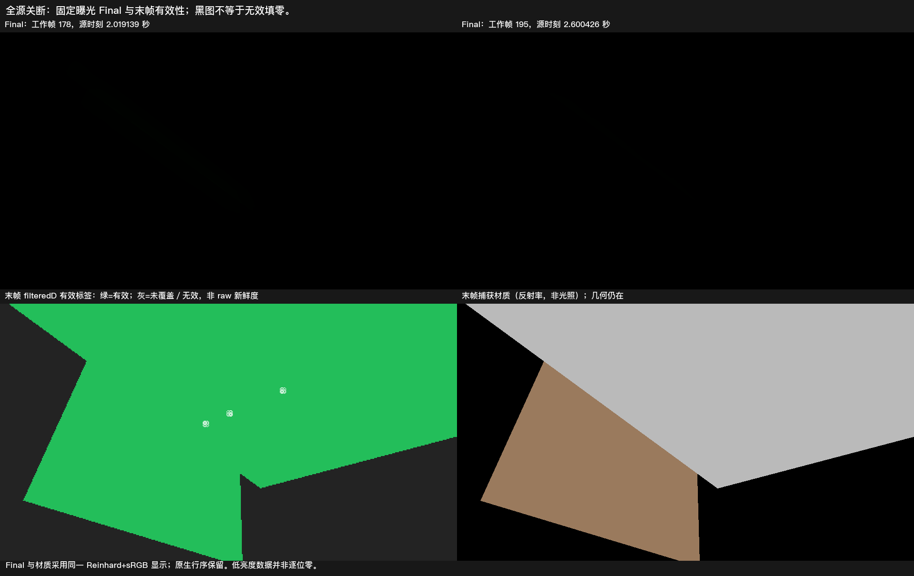
当前122同源、960×540／半GI、2ray／filter4。上排为普通Final，统一曝光1、Reinhard+sRGB；下排是末帧有效性和材质图，不是照明。白圈为事前固定点。源时刻与线性读数
原冻结文字将墙误写为白色，实际墙颜色为(0.5,0.25,0.125)，地板为白色。这里只采用实际棕墙配置，全白／高反射率条件未验证。观测是约29.1～29.4Hz的显式渲染请求，不能当普通Player帧率；时域存储有效不等于当帧raw新鲜，中间每帧过滤有效性未直接读出。关断范围 ↗
封闭反射房间中的唯一点光关闭
已有封闭灰墙房间先被内部绿点光照亮，再关闭唯一点光。九个预定接收点在 0.981452秒剩0.04606%、1.968233秒剩0.004056%，末端实际过滤数据有效。它补充封闭房间这一光路，不是任意房间能量或全图结果。
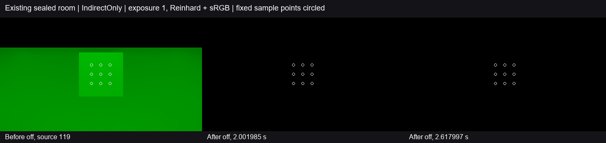
122产品与发行质量、960×540、实际DXR；量为IndirectOnly间接出射，未把原生点光直射放入衰减分母。约29.30Hz显式请求，不是Present性能。固定域与源时间 ↗
点光继续照明时的绿转蓝
同一封闭灰墙房间的点光保持开启。Release200 在约 1 秒和 2 秒仍残留 11.84% 和 6.02% 的旧绿。Release201 分别降至 0.046% 和 0.0041%，末端蓝光仍与旧版接近。结论采用固定九点的间接出射和原残留阈值。
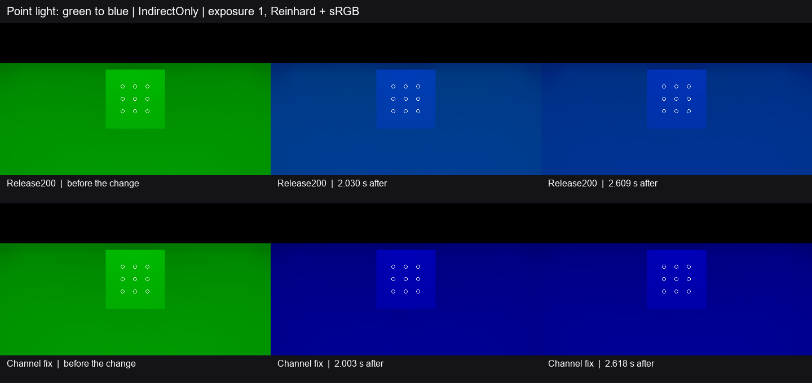
960×540、半分辨率 GI、实际 DXR Editor Play。白圈为固定接收点。Release200 读数 · 修复版读数 · 适用范围 ↗
历史观察与修复记录
物体没有可用图卡时，材质换色能传到地板吗？
Release113 中，近处遮板的共享材质为红色，运行时覆盖为绿或蓝，白地板仍然收到红光。Release114 修复后，设置 Renderer 为绿、设置槽 0 为蓝、清除槽覆盖的三个连续工作帧中，地板依次收到绿光、蓝光、绿光。
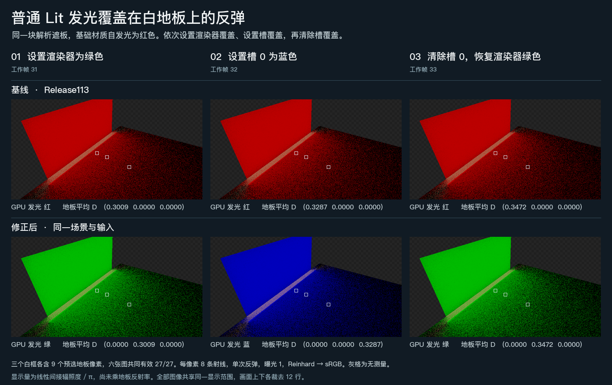
单槽普通 Lit 的解析回退，三个时点各有 27 个共同有效地板点。每张图使用同一曝光。这组单次反弹关闭了时间历史，能区分材质是否正确传入光路；多跳残留见下方其他观测。线性读数与实际 GPU 来源
关灯时暂时采不到新光。 Release112 修复了全局灯变化只记一帧的问题。像素连续两帧没有可信采样时可以继续显示原来的白色。首次得到可信黑色时，旧版的线性输出仍是 0.666667，修复后直接降至 0。此后正常累计。这是两像素控制输入的实际时间重建着色器读数；整景关灯画面与多跳残留见本节下方。连续帧与子像素读数
同版蓝墙对照。 Release109 中，红墙改蓝后第 30 帧，与从首帧就是蓝墙的对照相比，地板和白色接收块的平均间接亮度分别低 12.34% 和 11.59%。红色占比在地板低 2.53 个百分点，在白色接收块高 1.62 个百分点。该时点有亮度差，两处的色向变化不同。
 实际 DXR，640×360、半分辨率 GI，2 条射线、4 级滤波。两程仅比较相同机位与工作帧。少量未知点单列，精确收敛时间仍未知。采集与读数 · 两程线性数据与掩码
实际 DXR，640×360、半分辨率 GI，2 条射线、4 级滤波。两程仅比较相同机位与工作帧。少量未知点单列，精确收敛时间仍未知。采集与读数 · 两程线性数据与掩码
换色。 Release83 软件路径把红墙改蓝，地面和白色接收体都保持原材质。第 30 帧，两处反弹已明显转蓝。第 59 帧与第 119 帧的区域平均 RGB 归一化色向 L1 距离分别为 0.005536 和 0.001583。蓝墙状态缺少独立参考，绝对旧色份额仍未知。
 Release83，换色前和换色后 30、59、119 帧。比较相同已知点的 D。换色记录 ↗
Release83，换色前和换色后 30、59、119 帧。比较相同已知点的 D。换色记录 ↗
关灯。 在 Release78 对应的修复中，相机上传的解析灯表清空后，缓存单独使用发光面和环境的份额。在这个事件中，关灯当帧到第 59 帧的逐像素出射亮度绝对变化均值从 0.006379 降到 0.000499，减少 92.18%。该数值衡量两张画面之间的变化。部分灯仍开启时的多跳残留及物理误差仍待确定。
 Release78 候选与原版本。发光面继续照亮房间，图中显示乘过接收材质的间接出射贡献。图内候选标签沿用采集时的名称，最终采用结论见关灯记录 ↗。
Release78 候选与原版本。发光面继续照亮房间，图中显示乘过接收材质的间接出射贡献。图内候选标签沿用采集时的名称，最终采用结论见关灯记录 ↗。
3. 运动颗粒减少后，门有没有留下拖影？
看图中第一行的前三格。门从左侧移到右侧，第 239 帧回到起始位置，机位和五盏灯保持不变。此时右侧黑色接收块重新露出，原门位看不到可辨认的第二道门轮廓。这是含直射的普通画面，较弱的间接光拖尾仍可能被掩盖。
 640×360，半分辨率 GI。关灯后左侧发光面仍可见。全程功能记录及各时点的普通画面不能给出纯拖影量或精确收敛时间。路线与帧记录
640×360，半分辨率 GI。关灯后左侧发光面仍可见。全程功能记录及各时点的普通画面不能给出纯拖影量或精确收敛时间。路线与帧记录
在门运动中、刚到终点和停后 10、30 帧，4 级滤波使门面、地板和绿墙上的云斑减弱。门和墙地交界仍可辨认，同平面的明暗过渡更柔。四个观测点均未见明显新增的持续旧门轮廓。观测点之间的运动和其他速度仍有不确定性。
 左为已有 Release88 的 DXR／3 级滤波，右为 Release92 采用的 DXR／4 级滤波。两侧均为 2 条射线，第 149、179、189、209 帧，同曝光的间接出射贡献。运动图来源 ↗
左为已有 Release88 的 DXR／3 级滤波，右为 Release92 采用的 DXR／4 级滤波。两侧均为 2 条射线，第 149、179、189、209 帧，同曝光的间接出射贡献。运动图来源 ↗
按 F5 查看间接光会让它重新累积吗？
在同一固定机位把强度减半，切到仅间接光，再切回最终画面。Release118 每次操作都把地板历史清到 1 帧。Release119 白框内的 64 个有效点始终保持 32 帧，实测合成强度从 1 降至 0.5。
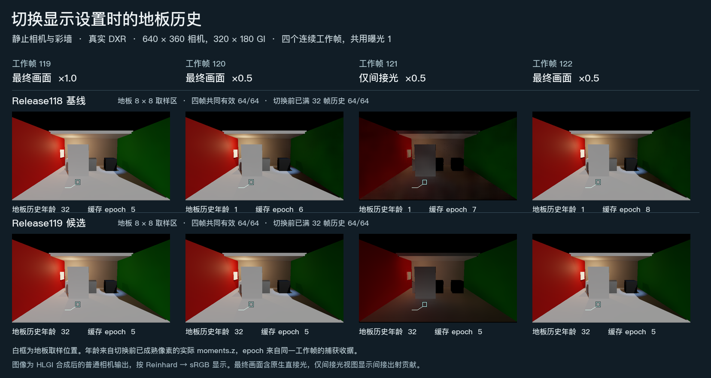
Editor Play 的普通 DXR 路径，曝光相同。第三列只显示间接光。相机线性 RGB、强度与历史
普通可读网格门还有一项独立修复。最后一帧的 24 个顶点已被捕获后按停，旧版在引擎帧 16 与 27 两次发布相同终姿，新版只在第 16 帧发布。此项记录几何提交；运动拖影仍见上方画面。停姿与发布记录
4. 变化后，多久恢复到匹配的最终状态？
唯一点光从 20 降到 2
封闭灰墙房间中，修复版的九点间接亮度在 0.260–0.772 秒形成首个匹配低亮控制的保持窗口。2 秒前最后一帧相对低亮控制的亮度偏差由 +55.45% 降至 +1.06%，相对高低控制之差的旧亮增量由 6.23% 降至 0.12%。灯全程为绿色。
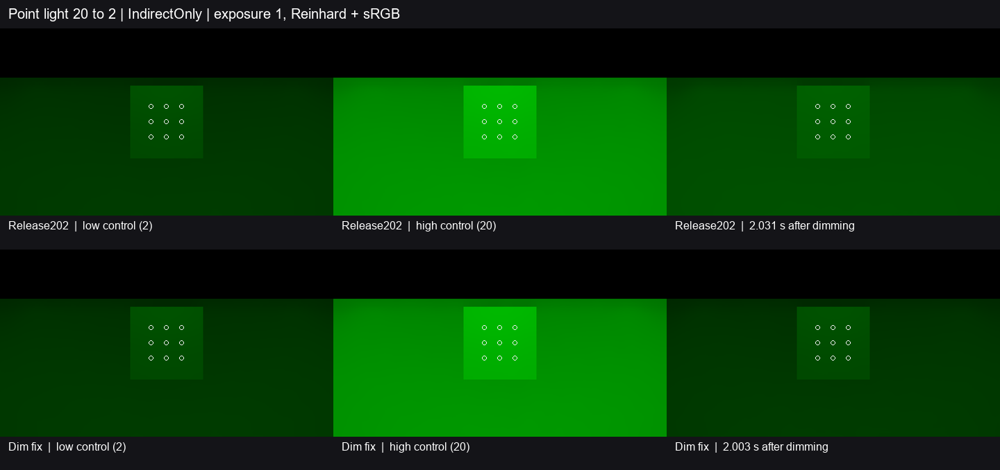
同曝光 IndirectOnly，960×540、半分辨率 GI、实际 DXR Editor Play。白圈为固定接收点。范围为固定单点光调暗。Release202 读数 · 修复版读数 · 适用范围 ↗
绿点光调暗，蓝点光保持亮度
同一房间加入一盏固定蓝点光。约 2 秒时，绿通道相对低亮控制的偏差由 +55.48% 降至 +1.06%，色向 L1 由 0.208 降至 0.0051。修复版的九点均值在 0.253–0.767 秒形成首个合格保持窗口，整个响应期间蓝通道的最大偏差为 2.28%。
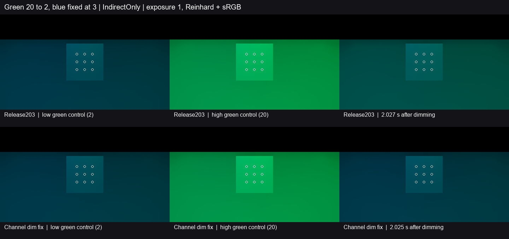
上排 Release203，下排修复版。960×540、半分辨率 GI、实际 DXR Editor Play。两盏点光颜色通道独立。Release203 读数 · 修复版读数 · 适用范围 ↗
发光换色：固定域均值的可用响应时间
当前122同源产品、实际棕墙／白地板中，绿转蓝路径相对同工作帧的较长蓝前史产品控制，固定地板均值在 0.193958～0.708270秒形成首个合格保持窗口；之后观测到2.612935秒未再次越线。采用亮度±10%、色向L1≤0.05并保持至少0.5秒的工程目标，控制本身满足预定稳定性条件。
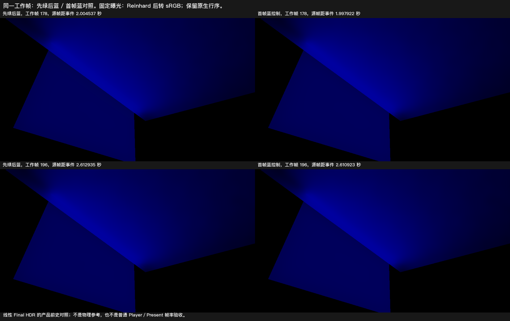
960×540／GI480×270、2ray／filter4，图为work178／196，同曝光的线性Final HDR经Reinhard+sRGB显示。控制是产品输出，不是独立物理真值，也不是无限稳态。恢复窗口与逐源读数
窗口起点最差单点亮度差仍为 23.05%，约2秒时最差点约1%。因此0.194秒是区域均值的已观察窗口起点，不能说全像素已恢复。实际源节奏约29.4Hz，未测普通Player性能；输入描述偏差与有效性限制同第2节。采用范围 ↗
红墙反射率换蓝：地板可采用，白块控制不足
原640×360归档场景中，当前Runtime的地板均值相对独立蓝前史产品控制，在 1.141710～1.654460秒形成合格保持窗口，后续观测至2.611763秒未再越线。地板控制稳定性合格；白块控制自身亮度波动9.03%，超过冻结5%，其恢复不能采用，两个接收域的整体合同仍不足。
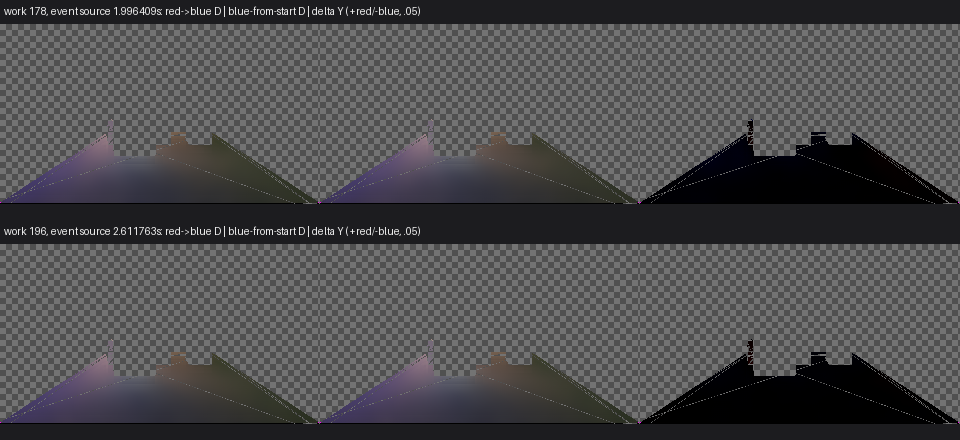
当前122同源，原场景／2ray／filter4／DXR，约2秒和末帧的filteredD，不是上图Final。地板有2个unknown；均值窗口不等于每个像素恢复。两域资格与数值 · 控制不足及范围 ↗
这些是各自固定光路的恢复观察，没有给出统一三室、几何遮挡改变或门运动的共同收敛时间。第3节四张门图仍不足以量化很弱拖尾的时长。
历史帧数观察
唯一发光源切蓝后，旧绿色多久消退？
Release114 在黑环境中只保留一个发光板，从纯绿切到纯蓝。开启时间累积、递归反弹和 4 级滤波后，白地板平均 G 相对切换前的残留在首个蓝色帧为 7.46%，第 +10 帧为 1.43%，第 +30 帧为 0.285%，第 +119 帧仍有 0.0000681%。
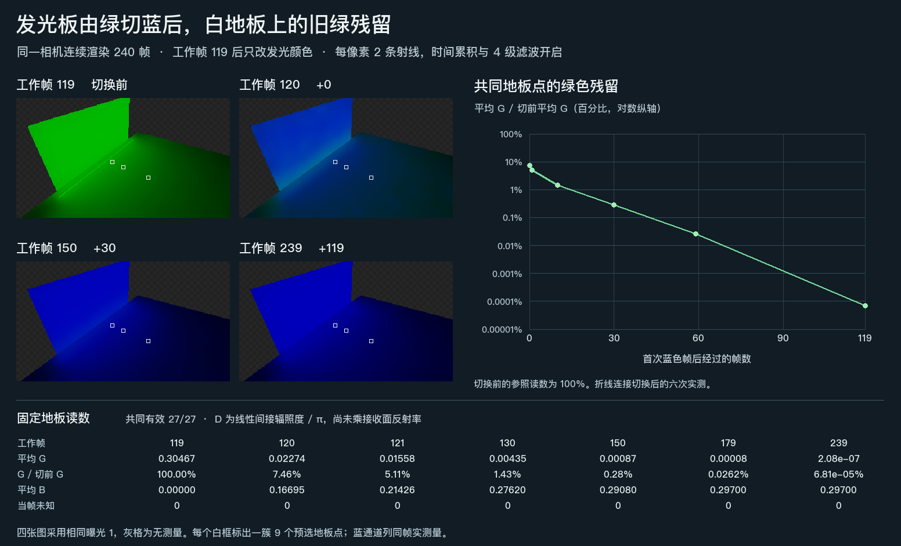
640×360 相机、半分辨率 GI、每像素 2 条射线。七个时点的同一批 27 个地板点全部有效。比例衡量旧绿色消退，蓝色的物理终值和精确稳定帧仍未知。时点、线性值与源状态
五盏解析灯重新开启
Release83 软件路径恢复五盏选定灯后，第 30 帧地面和白色接收体只恢复到各自此前亮灯观测值的 74.65% 和 65.68%。到第 59 帧，两者分别达到 98.36% 和 96.78%。此时与独立亮灯参考相比，平均 D 亮度仍分别低 7.39% 和 6.48%。
 Release83，逻辑帧 119 为此前亮灯观测，300 重新开灯，330 和 359 为恢复后的采样点。相机、门位姿、灯状态和比较区域在三张亮灯观测中匹配。恢复数据与参考 ↗
Release83，逻辑帧 119 为此前亮灯观测，300 重新开灯，330 和 359 为恢复后的采样点。相机、门位姿、灯状态和比较区域在三张亮灯观测中匹配。恢复数据与参考 ↗
这些历史记录只报告所采样帧的恢复程度，不能按30FPS目标换算为实测秒数，也不能替代上方新观察或给出整景统一收敛时间。
5. 白色平面能反射多少光，黑色与金属表面又会增加多少漫反射？
均匀白环境。 Release99 的无遮挡平面使用单位漫反射率、AO 和强度，环境入射辐亮度 RGB 均为 1，理论间接出射 RGB 因此也均为 1。真实相机中央 64×64 像素的三个通道均值都为 0.99902347，相对偏差为 −0.09765%。每个样点的 R、G、B 相等。该单帧观测覆盖这个平面的出射贡献，偏差产生的具体阶段仍未知。
 Release99，软件追踪。预览采用 Reinhard 与 sRGB 显示映射，统计取自映射前的浮点像素。保存原始线性 EXR 输入与数值 ↗
Release99，软件追踪。预览采用 Reinhard 与 sRGB 显示映射，统计取自映射前的浮点像素。保存原始线性 EXR 输入与数值 ↗
零漫反射材质。 历史 V209 第 119 帧的普通加法合成中，全金属接收面的 298 个内部采样点和黑色接收面的 473 个内部采样点，合成前后线性 RGB 逐点相同。全部金属样点和 446 个黑色样点原本已有非零颜色，这部分颜色完整保留。这里观察的是净增量，直接光与镜面分量合并在原生相机颜色中。
 V209，第 119 帧，左为合成前，中为合成后，右为按源几何选出的内部采样点。同帧对照与边界 ↗
V209，第 119 帧，左为合成前，中为合成后，右为按源几何选出的内部采样点。同帧对照与边界 ↗
6. 看不见的表面能否影响眼前的地板？
视锥外凹口的内板会把颜色反弹到地板吗？
同一个三槽网格包含红色前框、后退 0.06 单位的蓝色内板和黑色回边。相机只看白地板。左区平均红／蓝为 0.11972／0.02984，右区为 0.04056／0.10396，绿通道均为零。
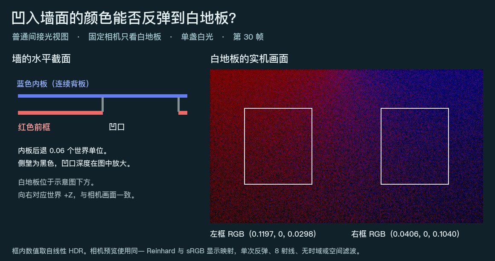
使用 Release120 源码在单次反弹、8 条射线和无滤波的条件下采集。材质为常量颜色，接缝误差另计。区域与设置 · 原始 EXR
没有 Renderer 的烘焙门框会挡住洞口吗？
同一面墙包含门洞和两根实柱。旧版把穿洞射线挡在 3.5 单位处，Release120 改为命中 8.75 单位外的后墙，与 PhysX 一致。打右门柱的射线仍命中实体，距离场读数 3.49966，物理三角查询为 3.5。这里测量的是两条世界射线；门框由作者为可读 MeshFilter 明确烘焙了 32³ 距离场。修复前命中 · 修复后命中与物理对照
材质关闭接收阴影后，次级受光面仍会变黑吗？
白色单槽 Lit 面走无卡解析回退。保持点灯和遮板不动，只改同一材质的接收阴影关键字，沿同一光路读取受光点反射的线性漫射 RGB。
| 接收实时阴影 | Release115 | Release116 | 该点计算值 |
|---|
| 开启 | 0 | 0 | 0 |
| 关闭 | 0 | 0.328887 | 0.328888 |
三个通道读数相同。遮板在两次查询中都挡住灯到受光点的路径。这里测的是受光点的反射贡献，整景最终亮度没有单独测量。旧版读回 · 修复后读回
旋转薄板的空角会挡光吗？
穿过同一世界包围盒的两条光线，一条撞上板身，一条穿过空角。Release114 将两条都判给近板。Release115 在板身处命中倾斜板面，空角光线继续到达后墙，两者的距离与法线均与 Unity 的碰撞查询相符。
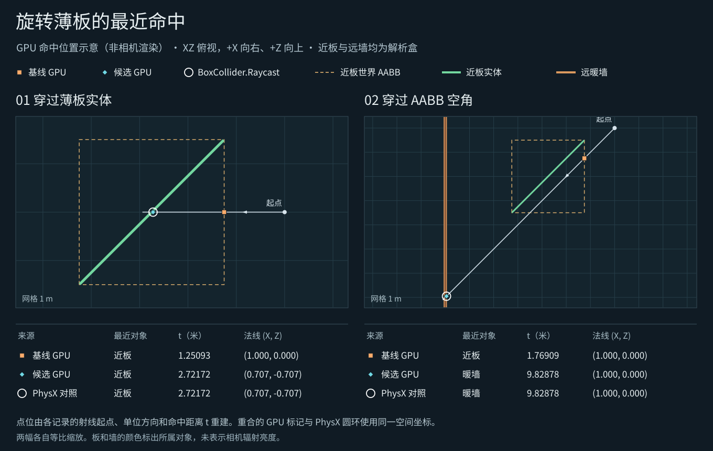
图按 GPU 读回位置绘制。两件对象均为只有 BoxCollider 的解析代理，取样未涉及 DXR 三角或相机像素亮度。旧版命中 · 本版命中与独立碰撞查询
近处的解析遮板能否截住更远的 DXR 色墙？
地板与暖色墙使用精确硬件网格；绿色遮板只有 BoxCollider 和 GI Proxy。在同一机位把遮板移入光路，27 个固定白地板采样点的平均间接 RGB 从 (0.11553, 0.05776, 0.02888) 变为 (0, 0.30093, 0)。遮板没有可供普通相机绘制的网格，屏幕射线也已关闭。
 两程各为 2 个硬件网格、1 个解析回退，均取 GI 工作帧 31。数值是乘接收面反射率之前的间接漫反射辐照度除以 π。线性读数、采样点和几何条件
两程各为 2 个硬件网格、1 个解析回退，均取 GI 工作帧 31。数值是乘接收面反射率之前的间接漫反射辐照度除以 π。线性读数、采样点和几何条件
在有限色墙场景中，墙完全位于视锥外。只交换墙纹理两种颜色的位置，白地板左右两区的平均 R−B 均反转。此图采用 8 条射线、一次反弹，关闭时域与空间滤波。离屏纹理原始 EXR 对
 同一相机只看地板。两张纹理各有一半红色和一半蓝色。
同一相机只看地板。两张纹理各有一半红色和一半蓝色。
Release102 的相邻两室共用一个门洞。关闭全部解析灯后，同一前室地板区域的平均线性亮度在开门时为 0.11809，全闭时为 0.00000530。两图分别来自固定门姿的第 119 帧，使用 2 条射线和 4 级滤波。开关门原始 EXR 对
 相机始终看同一接收面。两次独立运行支持这处门洞的遮挡结论；关门后的衰减时间尚未由这对画面测量。
相机始终看同一接收面。两次独立运行支持这处门洞的遮挡结论；关门后的衰减时间尚未由这对画面测量。
旧 640×360 观测止于约 1.42 秒。当前 122 同源 Runtime 的 960×540 匹配对照中，固定地板关门后在 1.008 秒仍剩开闭亮度差的 15.33%，2.000 秒仍剩 10.33%，2.616 秒仍剩 8.87%。1 秒和 2 秒恢复目标均未满足。查看同曝光对照、实际时点与适用范围
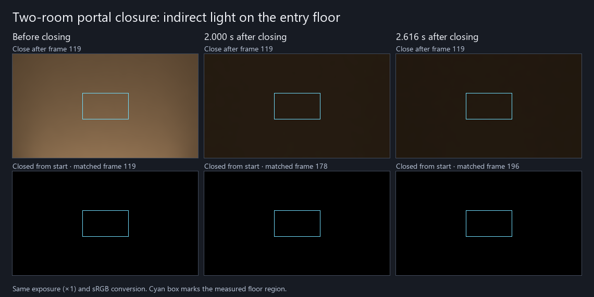
上排在第 119 帧后关门，下排从首帧闭门。青色框是固定的测量地板区域。
修复用同源几何范围识别滑门跳变，并隔离旧世界缓存的递归输入。固定地板在 1 秒和 2 秒前最后一帧的残留降到 2.637% 和 0.214%，保持窗达到原定要求。
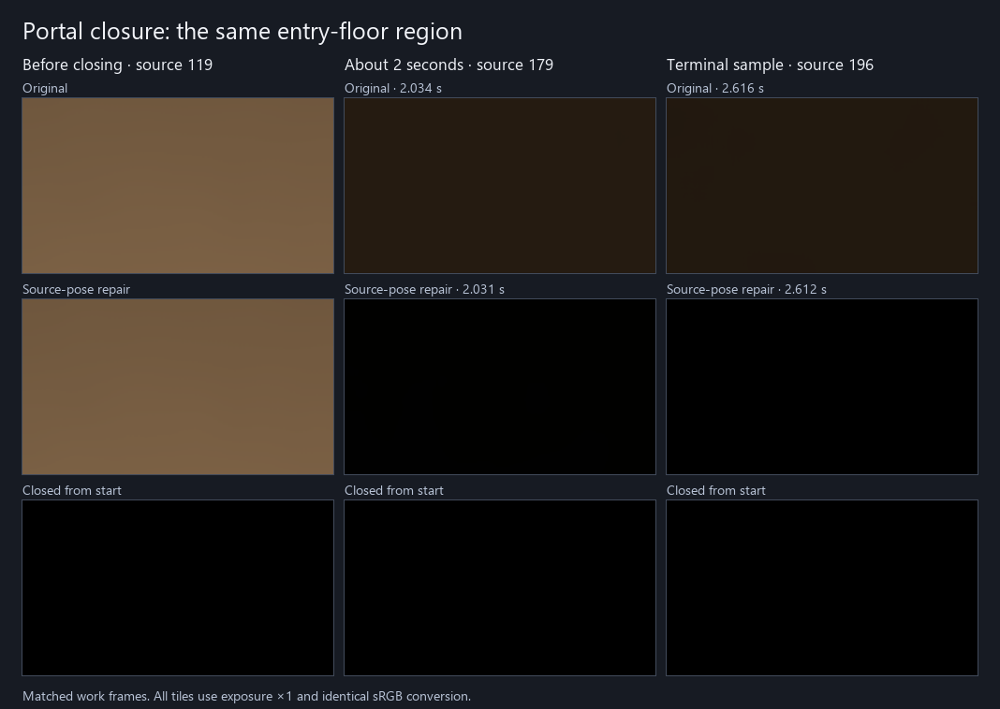
三排分别为原版、修复和首帧闭门控制。每列取同一工作帧。
 Release102。门已闭合，解析灯为零，亮度变化来自暖色发光面间接照明的响应。同一过程的逐点读数 ↗
Release102。门已闭合，解析灯为零，亮度变化来自暖色发光面间接照明的响应。同一过程的逐点读数 ↗
把相机移到左门框后方，地板接收区到两块暖色发光面的直线都穿过左隔墙。开门时这块地板平均间接亮度为 0.01979983，闭门时为 0.00007467。两次独立运行均取固定门姿的第 119 帧。受遮地板原始 EXR 对
 青框为地板接收区，金线为一条可行反弹光路。图像没有分解各墙面的贡献。机位与遮挡范围 ↗
青框为地板接收区，金线为一条可行反弹光路。图像没有分解各墙面的贡献。机位与遮挡范围 ↗
三室中穿过错位开口后，中央门如何显露？
Release117 修复了出域时多保留一帧旧组的现象。在相邻相机帧中，域内可提交完整远景根，移至 41 单位后可提交成员为零，根仍绑定。可见域到 40 单位，页加载带到 45 单位。读数来自普通 Renderer 的提交标志。117 实际相机边界 · 旧版与冷入限制
在 Release105 中按 F3、F4。沿右侧开口进入中室，向左对准中央门，再进入源室。普通 Player 的实际路线通过了两道门洞；同一布局 Far 发布完整聚合体，返回 Near 后恢复全部三个细节成员。
 机位和资源状态来自普通 Windows Player。图像为同一保存场景按实际机位重现的 Editor Final。入口原图 · 中央门原图 · 源室末点原图
机位和资源状态来自普通 Windows Player。图像为同一保存场景按实际机位重现的 Editor Final。入口原图 · 中央门原图 · 源室末点原图
7. 替换烘焙漫反射时，真实直射灯还能保留吗？
两块普通 Forward Lit 地面读取同一张非方向光照贴图的不同区域。关闭烘焙用灯，运行时加入绿色直射灯。在 HLGI 间接强度为零时启用替换，两侧都只保留了直射。与解绑贴图且关闭 HLGI 的独立画面相比，两处内部区域的最大线性通道差为 5.96 × 10⁻⁸。
 Unity 6000.0.85f1，URP 17.0.4，静态非方向贴图。烘焙加直射 EXR · 替换 EXR · 仅直射 EXR · 条件与读数 ↗
Unity 6000.0.85f1，URP 17.0.4，静态非方向贴图。烘焙加直射 EXR · 替换 EXR · 仅直射 EXR · 条件与读数 ↗
在另一张真实方向贴图上，同一接收面法线由向左倾改为向右倾时，暖、冷两处都出现可辨的亮度变化。对向右倾的法线启用替换，两个内部区域与独立实时直射的最大通道差为 0.000488，处于原生漫反射中间纹理的一个 FP16 间隔以内。
 Release106 源码，固定俯视相机，方向贴图的 UV 与位置保持一致。原生左倾 EXR · 原生右倾 EXR · 替换 EXR · 仅直射 EXR
Release106 源码，固定俯视相机，方向贴图的 UV 与位置保持一致。原生左倾 EXR · 原生右倾 EXR · 替换 EXR · 仅直射 EXR
烘焙遮住的表面还会把灯光反射给别的物体吗？
移走原遮板后，117 的真实遮罩和全白控制产生相同的反弹。118 在原遮区上方测得间接亮度 0.000000，换成全白遮罩后为 0.478625。受光区仍有反弹。两块区域各有 256 个共同有效点。
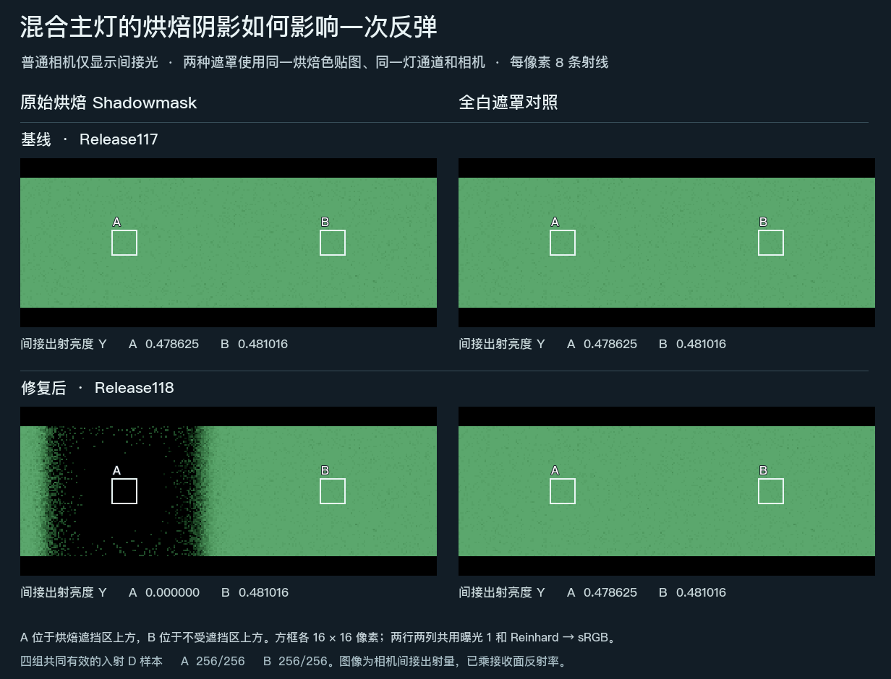
同一 Mixed 主方向灯和原地板 UV2。实际 DXR，使用图卡，单次反弹，同一曝光。线性读数、灯通道与有效点 · 四个端点的原始线性图和有效掩码
Mixed 主灯与 Shadowmask。 在同一静态接收面上，将 baked color 换为黑色、保留原遮罩，得到独立的原生直射。Replace 后受遮区和受光区的平均线性亮度分别为 0 和 0.488486，两个内部区域均与该直射基准逐像素相符。仅将遮罩换白后，原受遮区也达到 0.488486。
 普通 Forward Lit、通道 0。烘焙板在四帧采集前均已禁用。原生 EXR · 替换 EXR · 遮罩直射 EXR · 全白遮罩 EXR
普通 Forward Lit、通道 0。烘焙板在四帧采集前均已禁用。原生 EXR · 替换 EXR · 遮罩直射 EXR · 全白遮罩 EXR